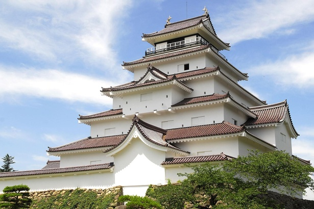
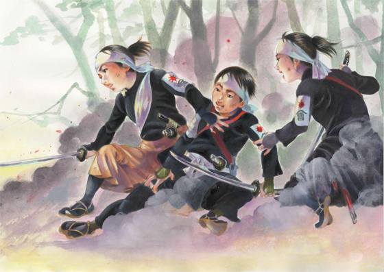
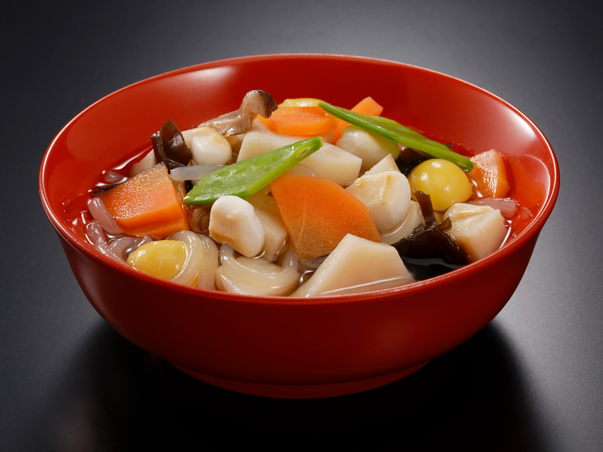

会津若松市（あいづわかまつし）は、福島県会津地方東部にある市。会津地方の中心都市である。計量特定市に指定されている。1899年（明治32年）に市制施行。 江戸時代には会津藩の城下町として盛え、現在でも鶴ヶ城や白虎隊など、歴史上の事物が観光資源として有名である。その他にもこづゆなどの文化的な特色、 赤べこなどに代表される伝統工芸などにより、数多くの観光客を集める。近年では平成30年情報通信月間総務大臣表彰を受けるなど、情報通信技術(ICT) を利用した取組の先進地域としても知られる。
会津若松市（あいづわかまつし）は、福島県会津地方東部にある市。会津地方の中心都市である。計量特定市に指定されている。1899年（明治32年）に市制施行。 江戸時代には会津藩の城下町として盛え、現在でも鶴ヶ城や白虎隊など、歴史上の事物が観光資源として有名である。その他にもこづゆなどの文化的な特色、 赤べこなどに代表される伝統工芸などにより、数多くの観光客を集める。近年では平成30年情報通信月間総務大臣表彰を受けるなど、情報通信技術(ICT) を利用した取組の先進地域としても知られる。
| 項目 | ||
| 鶴ヶ城 若松城（わかまつじょう）は、福島県会津若松市追手町にあった日本の城。別名鶴ヶ城（つるがじょう）で、地元ではこの名で呼ばれることが多い。 また、同名の城が他にあるため、会津若松城（あいづ わかまつじょう）とも呼ばれる。 |
 | 詳しい情報 |
| 白虎隊 白虎隊（びゃっこたい）は、日本の幕末維新における戊辰戦争の一環である会津戦争に際して、会津藩が組織した、武家男子を集めた部隊である。 中には志願して生年月日を改め15歳で出陣した者もいたほか、幼少組として13歳の少年も加わっていた。名称は、中国の伝説の神獣「白虎」に由来する。他に玄武隊、朱雀隊、青龍隊、幼少隊などがある。 |
 | 詳しい情報 |
| 赤べこ赤べこは、赤い牛に似せた張子である。会津地方の郷土玩具であり、子どもの魔避けとして用いられてきた。
体色の赤には魔避けの効果があるとされ、黒い斑点は痘を表し、病にかかっても重くならないように子どもに赤べこを贈る風習があった。 |
詳しい情報 | |
| こづゆ 会津藩8代藩主松平容敬が参勤交代の時に食べた「重」という料理がルーツと言われる。内陸の会津地方でも入手が可能な、海産物の乾物を素材とした汁物である |
 | 詳しい情報 |